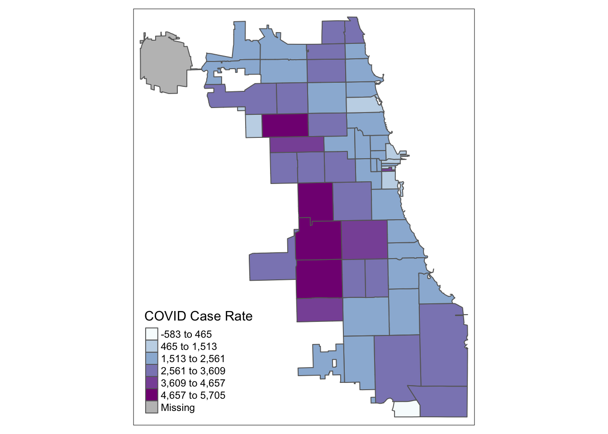

2 Map Neighborhoods
When considering the health of persons, we have to also consider the neighborhood environment. Sometimes this is looking at neighborhood level health outcomes, like premature mortality at the census tract scale, or cumulative COVID rates by zip code. Sometimes we’re interested in neighborhood factors like poverty, access to affordable housing, or distance to nearest health provider, or pollution-emitting facility. These measurements of the “social determinants of health” at the neighborhood scale are increasingly urgent in modern public health thinking, and are thought to drive and/or reinforce racial, social, and spatial inequity
In this module, we’ll learn about the basics of thematic mapping – known as choropleth mapping – to visualize neighborhood level health phenomena. This will allow you to begin the process of exploratory spatial data analysis and hypothesis generation & refinement.
2.1 Clean Attribute Data
Let’s consider COVID-19 cases by zip code in Chicago. We’ll upload and inspect a summary of cases from the Chicago Data Portal first:
COVID <- read.csv("data/COVID-19_Cases__Tests__and_Deaths_by_ZIP_Code.csv")
head(COVID)## ZIP.Code Week.Number Week.Start Week.End Cases...Weekly Cases...Cumulative Case.Rate...Weekly
## 1 60603 39 09/20/2020 09/26/2020 0 13 0
## 2 60604 39 09/20/2020 09/26/2020 0 31 0
## 3 60611 16 04/12/2020 04/18/2020 8 72 25
## 4 60611 15 04/05/2020 04/11/2020 7 64 22
## 5 60615 11 03/08/2020 03/14/2020 NA NA NA
## 6 60603 10 03/01/2020 03/07/2020 NA NA NA
## Case.Rate...Cumulative Tests...Weekly Tests...Cumulative Test.Rate...Weekly
## 1 1107.3 25 327 2130
## 2 3964.2 12 339 1534
## 3 222.0 101 450 312
## 4 197.4 59 349 182
## 5 NA 6 9 14
## 6 NA 0 0 0
## Test.Rate...Cumulative Percent.Tested.Positive...Weekly Percent.Tested.Positive...Cumulative
## 1 27853.5 0.0 0.0
## 2 43350.4 0.0 0.1
## 3 1387.8 0.1 0.2
## 4 1076.3 0.1 0.2
## 5 21.7 NA NA
## 6 0.0 NA NA
## Deaths...Weekly Deaths...Cumulative Death.Rate...Weekly Death.Rate...Cumulative Population
## 1 0 0 0 0 1174
## 2 0 0 0 0 782
## 3 0 0 0 0 32426
## 4 0 0 0 0 32426
## 5 0 0 0 0 41563
## 6 0 0 0 0 1174
## Row.ID ZIP.Code.Location
## 1 60603-39 POINT (-87.625473 41.880112)
## 2 60604-39 POINT (-87.629029 41.878153)
## 3 60611-16 POINT (-87.620291 41.894734)
## 4 60611-15 POINT (-87.620291 41.894734)
## 5 60615-11 POINT (-87.602725 41.801993)
## 6 60603-10 POINT (-87.625473 41.880112)Each row corresponds to a zip code at a different week. This data thus exists as a “long” format, which doesn’t work for spatial analysis. We need to convert to “wide” format, or at the very least, ensure that each zip code corresponds to one row.
To simplify, let’s identify the last week of the dataset, and then subset the data frame to only show that week. We will be interested in the cumulative case rate. Following is one way of doing this – can you think of another way? Try out different approaches of reshaping data to test your R and “tidy” skills.
## How many weeks are in our dataset?
range(as.numeric(COVID$Week.Number))## [1] 10 40## Subset & inspect to week 39.
COVID.39 <- subset(COVID, COVID$Week.Number == "39")
head(COVID.39)## ZIP.Code Week.Number Week.Start Week.End Cases...Weekly Cases...Cumulative Case.Rate...Weekly
## 1 60603 39 09/20/2020 09/26/2020 0 13 0
## 2 60604 39 09/20/2020 09/26/2020 0 31 0
## 36 60601 39 09/20/2020 09/26/2020 8 213 54
## 37 60602 39 09/20/2020 09/26/2020 0 21 0
## 41 60605 39 09/20/2020 09/26/2020 12 391 44
## 66 60610 39 09/20/2020 09/26/2020 35 666 90
## Case.Rate...Cumulative Tests...Weekly Tests...Cumulative Test.Rate...Weekly
## 1 1107.3 25 327 2130
## 2 3964.2 12 339 1534
## 36 1451.4 202 4304 1376
## 37 1688.1 27 460 2170
## 41 1420.8 291 7160 1058
## 66 1706.9 500 10680 1281
## Test.Rate...Cumulative Percent.Tested.Positive...Weekly Percent.Tested.Positive...Cumulative
## 1 27853.5 0.0 0.0
## 2 43350.4 0.0 0.1
## 36 29328.8 0.0 0.0
## 37 36977.5 0.0 0.0
## 41 26018.4 0.0 0.1
## 66 27371.3 0.1 0.1
## Deaths...Weekly Deaths...Cumulative Death.Rate...Weekly Death.Rate...Cumulative Population
## 1 0 0 0.0 0.0 1174
## 2 0 0 0.0 0.0 782
## 36 1 6 6.8 40.9 14675
## 37 0 0 0.0 0.0 1244
## 41 1 3 3.6 10.9 27519
## 66 0 10 0.0 25.6 39019
## Row.ID ZIP.Code.Location
## 1 60603-39 POINT (-87.625473 41.880112)
## 2 60604-39 POINT (-87.629029 41.878153)
## 36 60601-39 POINT (-87.622844 41.886262)
## 37 60602-39 POINT (-87.628309 41.883136)
## 41 60605-39 POINT (-87.623449 41.867824)
## 66 60610-39 POINT (-87.63581 41.90455)To clean our data a bit, we’ll just keep the zip code name, and cumulative case rate for the week of September 20th, 2020.
COVID.39f <- COVID.39[,c("ZIP.Code", "Case.Rate...Cumulative")]
head(COVID.39f)## ZIP.Code Case.Rate...Cumulative
## 1 60603 1107.3
## 2 60604 3964.2
## 36 60601 1451.4
## 37 60602 1688.1
## 41 60605 1420.8
## 66 60610 1706.92.2 Merge Spatial Data
Next, let’s merge this data to our zip code master spatial file. Reload if necessary:
library(sf)
Chi_Zips = st_read("data/geo_export_54bc15d8-5ef5-40e4-8f72-bb0c6dbac9a5.shp")## Reading layer `geo_export_54bc15d8-5ef5-40e4-8f72-bb0c6dbac9a5' from data source
## `/Users/maryniakolak/Code/Intro2RSpatialMed/data/geo_export_54bc15d8-5ef5-40e4-8f72-bb0c6dbac9a5.shp'
## using driver `ESRI Shapefile'
## Simple feature collection with 61 features and 4 fields
## Geometry type: MULTIPOLYGON
## Dimension: XY
## Bounding box: xmin: -87.94011 ymin: 41.64454 xmax: -87.52414 ymax: 42.02304
## Geodetic CRS: WGS84(DD)head(Chi_Zips)## Simple feature collection with 6 features and 4 fields
## Geometry type: MULTIPOLYGON
## Dimension: XY
## Bounding box: xmin: -87.80649 ymin: 41.88747 xmax: -87.59852 ymax: 41.93228
## Geodetic CRS: WGS84(DD)
## objectid shape_area shape_len zip geometry
## 1 33 106052287 42720.04 60647 MULTIPOLYGON (((-87.67762 4...
## 2 34 127476051 48103.78 60639 MULTIPOLYGON (((-87.72683 4...
## 3 35 45069038 27288.61 60707 MULTIPOLYGON (((-87.785 41....
## 4 36 70853834 42527.99 60622 MULTIPOLYGON (((-87.66707 4...
## 5 37 99039621 47970.14 60651 MULTIPOLYGON (((-87.70656 4...
## 6 38 23506056 34689.35 60611 MULTIPOLYGON (((-87.61401 4...Next, merge on zip code ID. The key in the Chi_Zips object is zip, whereas the key for the COVID data is ZIP.code. Always merge non-spatial to spatial data, not the other way around. Think of the spatial file as your master file that you will continue to add on to…
#Chi_Zipsf <- merge(Chi_Zips, COVID.39f, by.x = "zip", by.y = "ZIP.Code", all = TRUE)
Chi_Zipsf <- merge(Chi_Zips, COVID.39f, by.x = "zip", by.y = "ZIP.Code")
head(Chi_Zipsf)## Simple feature collection with 6 features and 5 fields
## Geometry type: MULTIPOLYGON
## Dimension: XY
## Bounding box: xmin: -87.63999 ymin: 41.85317 xmax: -87.60246 ymax: 41.88913
## Geodetic CRS: WGS84(DD)
## zip objectid shape_area shape_len Case.Rate...Cumulative geometry
## 1 60601 27 9166246 19804.58 1451.4 MULTIPOLYGON (((-87.62271 4...
## 2 60602 26 4847125 14448.17 1688.1 MULTIPOLYGON (((-87.60997 4...
## 3 60603 19 4560229 13672.68 1107.3 MULTIPOLYGON (((-87.61633 4...
## 4 60604 48 4294902 12245.81 3964.2 MULTIPOLYGON (((-87.63376 4...
## 5 60605 20 36301276 37973.35 1420.8 MULTIPOLYGON (((-87.62064 4...
## 6 60606 31 6766411 12040.44 2289.6 MULTIPOLYGON (((-87.63397 4...2.3 Quantile Maps
Starting with a “classic epi” approach, let’s look at case rates as quantiles. We use the tmap library, and update the choropleth data classification using the style parameter. We use the Blue-Purple palette, or BuPu, from Colorbrewer.
Colorbrewer Tip: To display all Colorbrewer palette options, load the RColorBrewer library and run display.brewer.all() – or just Google “R Colorbrewer palettes.”
library(tmap)
tmap_mode("plot")
tm_shape(Chi_Zipsf ) +
tm_polygons("Case.Rate...Cumulative",
style="quantile", pal="BuPu",
title = "COVID Case Rate") 
Let’s try tertiles:
tm_shape(Chi_Zipsf ) +
tm_polygons("Case.Rate...Cumulative",
style="quantile", n=3, pal="BuPu",
title = "COVID Case Rate") 
2.4 Standard Deviation Maps
While quantiles are a nice start, let’s classify using a standard deviation map. Standard deviation is a statistical technique type of map based on how much the data differs from the mean.
tm_shape(Chi_Zipsf ) +
tm_polygons("Case.Rate...Cumulative",
style="sd", pal="BuPu",
title = "COVID Case Rate") 
2.5 Jenks Maps
Another approach of data classification is natural breaks, or jenks. This approach looks for “natural breaks” in the data using a univariate clustering algorithm.
tm_shape(Chi_Zipsf ) +
tm_polygons("Case.Rate...Cumulative",
style="jenks", pal="BuPu",
title = "COVID Case Rate") The first bin doesn’t seem very intuitive. Let’s try 4 bins instead of 5 by changing the n parameter. In this version, we’ll also had a histogram and scale bar, and move the legend outside the frame to make it easier to view.
tm_shape(Chi_Zipsf) +
tm_polygons("Case.Rate...Cumulative",
style="jenks", pal="BuPu",
legend.hist=T, n=4,
title = "COVID Case Rate", ) +
tm_scale_bar(position = "left") +
tm_layout(legend.outside = TRUE, legend.outside.position = "right")
2.6 Integrate More Data
To explore potential disparities in COVID health outcomes, let’s bring in pre-cleaned demographic, racial, and ethnic data from the Opioid Environment Policy Scan database. This data is orginally sourced from the American Community Survey 2018 5-year estimate, which you could also pull using the tidycensus.
CensusVar <- read.csv("data/DS01_Z.csv")
head(CensusVar)## ZCTA year totPopE whiteP blackP amIndP asianP pacIsP otherP hispP noHSP age0_4 age5_14
## 1 35004 2018 11762 84.39 13.09 0.00 0.94 0.00 1.57 0.94 5.52 787 1950
## 2 35005 2018 7528 55.22 42.44 0.64 0.00 0.15 1.55 1.37 17.48 511 1055
## 3 35006 2018 2927 96.04 3.21 0.27 0.00 0.00 0.48 0.00 14.44 161 413
## 4 35007 2018 26328 73.83 13.75 0.04 1.33 0.02 11.01 11.11 12.41 1891 4161
## 5 35010 2018 20625 63.07 32.43 0.39 0.65 0.00 3.45 4.10 22.00 1013 2647
## 6 35013 2018 40 100.00 0.00 0.00 0.00 0.00 0.00 100.00 100.00 0 0
## age15_19 age20_24 age15_44 age45_49 age50_54 age55_59 age60_64 ageOv65 ageOv18 age18_64 a15_24P
## 1 457 746 4552 662 541 776 832 1662 8820 7158 10.23
## 2 455 277 2429 580 469 560 552 1372 5691 4319 9.72
## 3 141 203 878 129 193 316 278 559 2308 1749 11.75
## 4 1619 1400 9947 1993 2067 1713 1315 3241 19178 15937 11.47
## 5 1383 1087 7036 1418 1545 1510 1341 4115 16142 12027 11.98
## 6 0 0 13 8 19 0 0 0 40 40 0.00
## und45P ovr65P disbP
## 1 61.97 14.13 12.7
## 2 53.07 18.23 23.2
## 3 49.61 19.10 20.9
## 4 60.77 12.31 13.5
## 5 51.86 19.95 19.6
## 6 32.50 0.00 0.0Merge to our master Zip Code dataset.
Chi_Zipsf <- merge(Chi_Zipsf, CensusVar, by.x = "zip", by.y = "ZCTA")
head(Chi_Zipsf)## Simple feature collection with 6 features and 31 fields
## Geometry type: MULTIPOLYGON
## Dimension: XY
## Bounding box: xmin: -87.63999 ymin: 41.85317 xmax: -87.60246 ymax: 41.88913
## Geodetic CRS: WGS84(DD)
## zip objectid shape_area shape_len Case.Rate...Cumulative year totPopE whiteP blackP amIndP
## 1 60601 27 9166246 19804.58 1451.4 2018 14675 74.17 5.57 0.45
## 2 60602 26 4847125 14448.17 1688.1 2018 1244 68.17 3.78 5.31
## 3 60603 19 4560229 13672.68 1107.3 2018 1174 63.46 3.24 0.00
## 4 60604 48 4294902 12245.81 3964.2 2018 782 63.43 5.63 0.00
## 5 60605 20 36301276 37973.35 1420.8 2018 27519 61.20 17.18 0.18
## 6 60606 31 6766411 12040.44 2289.6 2018 3101 72.75 2.35 0.00
## asianP pacIsP otherP hispP noHSP age0_4 age5_14 age15_19 age20_24 age15_44 age45_49 age50_54
## 1 18.00 0.00 1.81 8.68 0.00 550 156 907 909 8726 976 1009
## 2 19.45 0.00 3.30 6.51 0.00 61 87 18 91 987 46 53
## 3 27.60 0.00 5.71 9.80 0.00 13 43 179 172 684 75 47
## 4 29.67 0.00 1.28 4.35 0.00 12 7 52 168 450 27 47
## 5 16.10 0.03 5.31 5.84 2.39 837 1279 2172 2282 16364 1766 1520
## 6 18.09 0.00 6.80 6.29 0.73 57 44 0 139 1863 213 153
## age55_59 age60_64 ageOv65 ageOv18 age18_64 a15_24P und45P ovr65P disbP
## 1 324 859 2075 13855 11780 12.37 64.27 14.14 6.4
## 2 0 5 5 1095 1090 8.76 91.24 0.40 0.2
## 3 150 50 112 1118 1006 29.90 63.03 9.54 7.3
## 4 54 92 93 744 651 28.13 59.97 11.89 4.1
## 5 1824 1360 2569 25259 22690 16.19 67.15 9.34 5.3
## 6 168 172 431 3000 2569 4.48 63.33 13.90 1.9
## geometry
## 1 MULTIPOLYGON (((-87.62271 4...
## 2 MULTIPOLYGON (((-87.60997 4...
## 3 MULTIPOLYGON (((-87.61633 4...
## 4 MULTIPOLYGON (((-87.63376 4...
## 5 MULTIPOLYGON (((-87.62064 4...
## 6 MULTIPOLYGON (((-87.63397 4...2.7 Thematic Map Panel
To facilitate data discovery, we likely want to explore multiple maps at once. Here we’ll generate maps for multiple variables, and plot them as a map panel.
Can you think of more efficient ways to run this code? There are also other tmap tricks to optimize this further, so enjoy your journey!
tm_shape(Chi_Zipsf) + tm_fill("ovr65P",
style="jenks", pal="BuPu", n=4)COVID <- tm_shape(Chi_Zipsf) + tm_fill("Case.Rate...Cumulative",
style="jenks", pal="Reds", n=4, title = "COVID Rt")
Senior <- tm_shape(Chi_Zipsf) + tm_fill("ovr65P",
style="jenks", pal="BuPu", n=4)
NoHS <- tm_shape(Chi_Zipsf) + tm_fill("noHSP",
style="jenks", pal="BuPu", n=4)
BlkP <- tm_shape(Chi_Zipsf) + tm_fill("blackP",
style="jenks", pal="BuPu", n=4)
Latnx <- tm_shape(Chi_Zipsf) + tm_fill("hispP",
style="jenks", pal="BuPu", n=4, title="Test")
WhiP <- tm_shape(Chi_Zipsf) + tm_fill("whiteP",
style="jenks", pal="BuPu", n=4)
tmap_arrange(COVID, Senior, NoHS, BlkP, Latnx, WhiP)From the results, we see that cumulative COVID outcomes for one week in September 2020 seemed to have some geographic correlation with the Latinx/Hispanic community in Chicago. At the same time, low high school diploma rates are also concentrated in these areas, and there is some intersection with other variables considered. What are additional variables you could bring in to refine your approach? Perhaps percentage of essential workers; a different age group; internet access? What about linking in health outcomes like Asthma, Hypertension, and more at a similar scale?
In modern spatial epidemiology, associations must never be taken at face value. For example, we know that it is not “race” but “racism” that drives multiple health disparities – simply looking at a specific racial/ethnic group is not enough. Thus exploring multiple variables and nurturing a curiosity to understand these complex intersections will support knowledge discovery.
2.8 Data
We’re done! Well… not so fast. Let’s save the data so we don’t have to run the codebook again to access the data. Here, we’ll save as a geojson file. This spatial format is more forgiving with long column names, which is a long-standing challenge with shapefiles. But sometimes it can be written oddly, so double-check the dimensions when reading in later.
#st_(Chi_Zipsf, "data/ChiZipMaster.geojson", driver = "GeoJSON")We could also just the data as a CSV file which may be easier for future linking. For this, we use the st_drop_geometry() function to remove the geometry data, so we’re just left with the attributes.
#.csv(st_drop_geometry(Chi_Zipsf), "data/ChiZipMaster.csv")